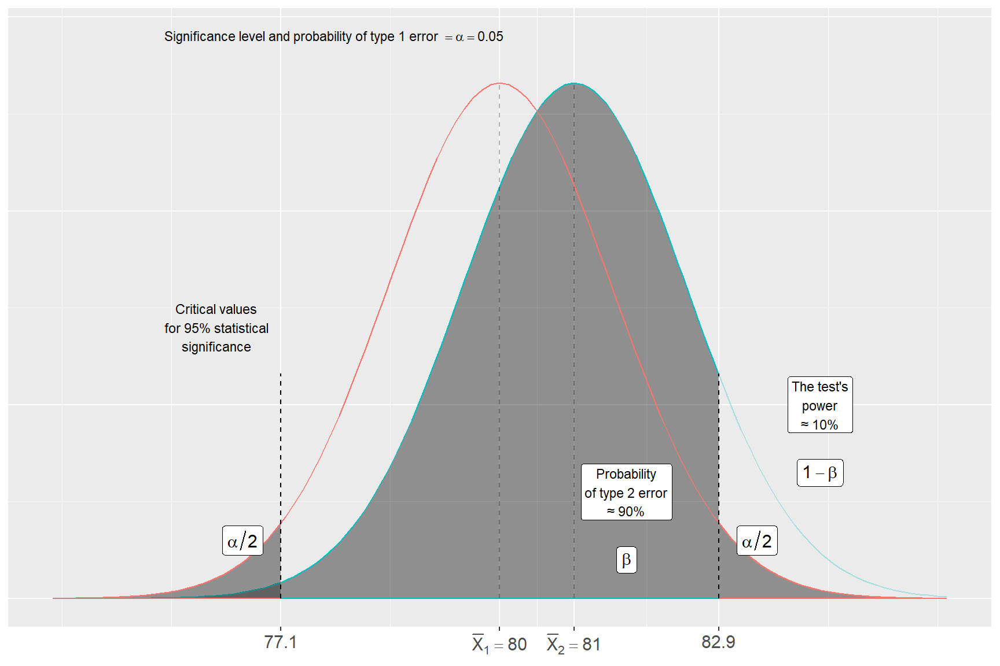

Chapter 24 Statistical analysis and inference
In this chapter, we continue the description of how statistical analysis can be conducted. We go through how we can estimate individual values, points, and intervals. We also introduce the concept of standard error, which gives us a measure of the uncertainty in an estimated value.
24.1 Point estimation
In section 15.4 we introduced the difference between the population, whose values are generally unknown, and the sample data we have access to. Statistical inference is the process by which we attempt to draw conclusions about unknown properties in a population using empirical data. This is what we do when we try to estimate the values in a population by calculating results with sample data.
If we want to know the population mean \(\mu_{X}\), we estimate this with sample data and the usual formula for the mean: \(\bar{x}=\sum_{i}^{n}x_{i}/n\). If the mean we calculate aims to make statements about a (larger) population beyond the data we have access to, then this is by definition an estimate of the population mean.
If we want to know the population’s unknown variance \(\sigma_{X}^{2}\) we estimate this as \(var\left(X\right)=\left(\frac{1}{n-1}\right)\sum_{i}^{n}\left(x_{i}-\bar{x}\right)^{2}\).
For the mean and variance, we estimate specific values, which is called estimating points, point estimates, or point estimation. The mean is thus an example of a point estimate. Each estimated mean is a constant, but the equation we use to estimate the mean with a collection of sample observations is called an estimator. The equation we use to estimate the variance is called the variance estimator.
24.2 Standard error
The expected value of the mean estimator is the population mean: \(E\left(\bar{x}\right)=E\left(\frac{1}{n}\sum_{i}^{n}x_{i}\right)=\mu_{X}\). When we estimate the mean \(\bar{x}\) we know that this differs more or less from the population value \(\mu_{X}\). Since we do not have access to all information about the population, there are random errors in our estimates. The difference between the estimated \(\bar{x}\) and the population value \(\mu_{X}\) can be described as the sampling error \(\bar{x}-\mu_{X}\). This sampling error cannot be calculated as long as we do not know the population mean \(\mu_{X}\) and is therefore often more to be regarded as a theoretical concept.
To calculate a measure of the uncertainty in a point estimate, we estimate what is called the standard error. The standard error is calculated in different ways depending on which point estimate we study. The standard error of the mean is estimated in the following way:
\[\begin{equation} \textbf{SE of the mean} = \frac{s_{x}}{\sqrt{n}}=\sqrt{\frac{s_{x}^{2}}{n}} \tag{24.1} \end{equation}\]
where \(s_{x}\) is the standard deviation, estimated with the sample observations and \(n\) is the number of observations in the sample. The equation shows different ways to write the same thing.
The equation can be read as: the smaller the dispersion we have in the observations (the numerator), the smaller the standard error becomes. Since we have the number of observations n in the denominator, this means that the standard error tends to decrease the more observations we include in our sample.
Both of these things are logical. The less dispersed the population’s values are, the more likely our calculation is to be correct. The more we know about the population (more observations), the closer our estimate of the population mean will be to the correct mean in the population.
24.3 Confidence interval
Another way to study a population is to estimate intervals, which is also called interval estimation or interval estimate. A particular interval that is often used in statistical analysis is the confidence interval, which is an interval between two values within which a specified proportion of repeated samples will contain the population value we seek. We determine ourselves for what proportion of samples we want to estimate the confidence interval, for example 90 or 95%, where the percentages thus indicate for what proportion of samples the interval will include the population value. The percentages are called the confidence level.
We are interested in the population’s (unknown) mean \(\mu_{X}\). With our sample data we estimate the mean as \(\bar{x}=\sum_{i}^{n}x_{i}/n\). Our estimation depends on what distribution the population has. We start here from a normally distributed variable \(X\) with mean \(\mu_{X}\) and variance \(\sigma_{X}\). The confidence interval can then be defined as:
\[\begin{equation} \textbf{Confidence interval:}\quad \bar{x}\pm z\frac{\sigma}{\sqrt{n}} \tag{24.2} \end{equation}\]
where \(\bar{x}\) is an estimated mean in a collection of sample observations. The letter \(z\) represents a value that we obtain from the standard normal distribution’s cumulative distribution function \(F\), which can be read from table 23.1 in chapter 23, depending on which confidence level we have chosen.
The table should be read as: if we choose confidence level 90%, we look up the value 0.95 in the table. We want to exclude 10% of the population’s values. By taking 0.95 we exclude 5% in the distribution’s upper tail and 5% in the distribution’s lower tail. For 0.95 we see in the table that \(z\approx1.65\). If we want to estimate a 95% confidence interval we choose 0.975, which gives \(z=1.96\). For confidence level 99% we choose 0.995, which gives \(z=2.58\).
The symbol \(\pm\) describes plus and minus. The confidence interval therefore results in a value below the mean \(\bar{x}\) and a value above. The two values are called the confidence interval’s lower and upper limits. Since \(\sigma\)(the population’s standard deviation) is generally unknown, the estimated confidence interval can be written:
\[\begin{equation} \textbf{Estimated confidence interval:}\quad \bar{x}\pm z\frac{s_{x}}{\sqrt{n}} \tag{24.3} \end{equation}\]
where \(s_{x}\) is the estimated standard deviation. Say for example that we have a data sample of \(n=28\) observations and estimate the mean \(\bar{x}=13\) and standard deviation \(s_{x}=3.7\). We choose confidence level 90%, therefore \(z=1.65\). This gives the following limits for the confidence interval:
\[\begin{equation} \begin{aligned} \bar{x}+z\frac{s_{x}}{\sqrt{n}} &= 13+1.65\cdot\frac{3.7}{\sqrt{28}}\approx14.15\\ \bar{x}-z\frac{s_{x}}{\sqrt{n}} &= 13-1.65\cdot\frac{3.7}{\sqrt{28}}\approx11.85 \end{aligned} \tag{24.4} \end{equation}\]
This indicates that if we take repeated samples, the population mean will be in the interval \(11.85<\mu_{X}<14.15\) in 90% of cases.
In section 23.2 we calculated the probability that two estimated means came from the same population, by calculating the difference between average life expectancy for men and women respectively in Sweden’s municipalities. The confidence interval for the difference between the estimated means for these two populations can be estimated in the following way:
\[\begin{equation} \left(\bar{x}_{1}-\bar{x}_{2}\right)\pm z\cdot\sqrt{\frac{s_{x_{1}}^{2}}{n_{1}}+\frac{s_{x_{2}}^{2}}{n_{2}}} \tag{24.5} \end{equation}\]
where \(\bar{x}_{1}\) and \(\bar{x}_{2}\) are estimated means for the two populations, \(z\) is the value from the standard normal distribution’s cumulative distribution function \(F\), \(s^{2}\) is estimated variance (standard deviation squared) and n is the number of observations in the respective sample. In this case we have the following values:
\[\begin{equation} \begin{aligned} \bar{x}_{\text{men}} &= 80.38\\ \bar{x}_{\text{women}} &= 83.95\\ s_{\text{men}}^{2} &= 1.663\\ s_{\text{women}}^{2} &= 1.032\\ n_{\text{men}}=n_{\text{women}} &= 290 \end{aligned} \tag{24.6} \end{equation}\]
This time we choose confidence level 95%, which gives \(z=1.96\). The confidence interval’s lower and upper limits then become:
\[\begin{equation} \begin{aligned} \left(80.38-83.95\right)+1.96\sqrt{\frac{1.032}{290}+\frac{1.663}{290}} &\approx -3.38\\ \left(80.38-83.95\right)-1.96\sqrt{\frac{1.032}{290}+\frac{1.663}{290}} &\approx -3.76 \end{aligned} \tag{24.7} \end{equation}\]
The estimate indicates that with repeated samples the difference between the two populations will in 95% of cases be \(3.38<\left(\mu_{\text{Women}}-\mu_{\text{Men}}\right)<3.76\).
24.4 Hypothesis testing
When we study patterns in data and covariation, we do this by testing hypotheses with statistical tests. A scientific hypothesis must be falsifiable, which means that it must be capable of being disproven with facts. We formulate a hypothesis and use a statistical test to assess the probability that the hypothesis is false. The probability that a hypothesis is false can never be below 0 or above 100%.
Statistical tests use a null hypothesis and an alternative hypothesis. The null hypothesis is often denoted \(H_{0}\) and the alternative hypothesis is denoted \(H_{1}\). The two hypotheses are formulated so that they are mutually exclusive. Both hypotheses cannot by definition be true or false simultaneously.
We formulate our hypotheses based on the covariation we want to study. The null hypothesis is generally formulated as there being no covariation — a non-relationship. In simplified terms, we have a theory we want to test with a statistical test. The null hypothesis describes the situation we must accept until we have shown valid reasons to believe otherwise.
For example, suppose we conduct an experiment and study how a medicine covaries with disease symptoms in a group of patients, divided into a treatment group (receives medicine) and a control group (does not receive medicine). Our theory is that the medicine will reduce the patients’ disease condition. When translating this to a null hypothesis and an alternative hypothesis, we formulate the null hypothesis as a non-relation between cause and effect. If the medicine has no effect on the disease, the treatment group will be equally sick or sicker than the control group:
\[H_{0}:\text{sickness}_{\text{treatment}}\geq\text{sickness}_{\text{control}}\]
The alternative hypothesis \(H_{1}\) becomes in this case the alternative situation where the disease condition is less in the treatment group than in the control group (which according to our theory is due to the medicine):
\[H_{1}:\text{sickness}_{\text{treatment}}<\text{sickness}_{\text{control}}\]
Observe that the hypotheses are not formulated regarding the actual causal relationship of the medicine. The hypotheses are instead formulated regarding observable differences. Our hypothesis test therefore tests a theory regarding the data we study.
Hypothesis tests are often used in connection with regression analysis. Suppose we study whether variations in a phenomenon \(X\) cause a certain type of variations in phenomenon Y, which we do using the regression model \(Y=a+bX+u\) where \(Y\) and \(X\) are variables, \(u\) is the error term and a and b are the coefficients that we use the least squares method to estimate.
We have reason to believe that \(X\) and \(Y\) covary and that \(b\neq0\). Based on this we formulate a null hypothesis in the form of a non-relation between the variables. A non-relation between X and Y in our regression model means that \(b=0\), therefore our null hypothesis becomes:
\[H_{0}:b=0\]
The alternative hypothesis is formulated in this case as:
\[H_{1}:b\neq0\]
The null hypothesis and alternative hypothesis thereby cover all possible alternatives: b is either equal to 0 or not equal to 0. This means that if our analysis shows that the covariation between X and Y is either positive or negative, we may have reason to reject our null hypothesis. But we are both interested in estimating the covariation between X and Y and in estimating the probability that the covariation we find could also have arisen by chance.
We test our hypotheses by calculating the probability that we would have gotten the result we get given that \(H_{0}\) is true. That is, we estimate a slope coefficient b in a regression model and then want to know what is the probability that we would have gotten this estimate, given that \(H_{0}\) is correct, that is, that we actually have \(b=0\).
24.5 Statistical significance, power and type errors
In classical statistics it is usually described that we should choose in advance with what probability we want to risk rejecting a true \(H_{0}\) when conducting statistical tests. This is called choosing significance level or alpha value and is denoted \(\alpha\). Another way to describe significance level is that it is the probability that a value deviates from an expected value, given that \(H_{0}\) is true. For example, what is the probability that we in the population have \(b=0\), given the value we estimate for \(\hat{b}\) in our regression model with our sample data? For 10% significance level, \(\alpha=0.1=10\)%:
\[1-\alpha=1-0.1=0.9=90\%\]
Based on this, one also usually says that a result is statistically significant for \(\alpha=0.1\), or statistically established, given 10% significance level. There is no objective method for choosing significance level. 95 percent is often used, which is common in academic articles within social science, but it is completely arbitrary and there is no mathematical logic behind why we would not use 94%, 96% or some completely different significance level instead.
The probability that \(H_{0}\) is true is usually denoted by what is called the p-value. The p-value gives the probability that we would have gotten an equally extreme value in a statistical test given that \(H_{0}\) is false. While significance level is generally stated in rounded numbers, for example 90, 95 or 99 percent, the p-value is calculated exactly through the statistical test.
Let us illustrate with an example. In section 23.2 we estimated the difference between the average life expectancy for men and women respectively in Sweden’s municipalities by calculating the following statistic:
\[z=\frac{\bar{X}_{\text{women}}-\bar{X}_{\text{men}}}{\left(\frac{s_{\text{men}}^{2}}{n_{\text{men}}}+\frac{s_{\text{women}}^{2}}{n_{\text{women}}}\right)^{1/2}}\approx\frac{83.95-80.38}{\left(\frac{1.663}{290}+\frac{1.032}{290}\right)^{1/2}}\approx37.0\]
Let us set this up as a statistical test. We have a theory that life expectancy differs between men and women. We formulate our null hypothesis as the corresponding non-relationship (that there is no difference):
\[\begin{equation} \begin{aligned} H_{0} &: \mu_{\text{men}}=\mu_{\text{women}}\\ H_{1} &: \mu_{\text{men}}\neq\mu_{\text{women}} \end{aligned} \tag{24.8} \end{equation}\]
As the null hypothesis is formulated, this means that we have a two-sided test. Both positive and negative difference can mean that we have reason to reject \(H_{0}\) as false. If we start from significance level 5%, our calculated z-value is 37.0, which is so high that it is not included in the table and the probability is therefore far above 0.999 (a value very close to 1, thus 100%). The result from our statistical test indicates with good margin that \(H_{0}\) is false. This is called that the result is statistically significant at the 1% level, which means that it is unlikely that it would have arisen through a random process.
When we use statistical tests and calculate probabilities to reject or not reject the null hypothesis, there is always a risk that we draw the wrong conclusion. Type 1 error is what it is called when we in a statistical test reject a null hypothesis \(H_{0}\) despite \(H_{0}\) being true. The probability of a type 1 error is the same thing as the significance level \(\alpha\). Based on this we describe \(1-\alpha\) as the probability that we reject \(H_{0}\) when \(H_{0}\) is false.
Type 2 error means that we instead accept a null hypothesis \(H_{0}\) despite this actually being false. The probability of type 2 error is usually denoted by the letter \(\beta\)(Greek letter beta). Statistical power is the probability (a value between 0 and 1) that we succeed in rejecting \(H_{0}\) when \(H_{0}\) is false:
\[\textbf{Statistical power}=P\left(\text{reject }H_{0}\mid H_{0}\text{ is false}\right)\]
To summarize:
\[\begin{equation} \begin{aligned} \textbf{Type 1 error} &=\alpha=\text{significance level, reject true }H_{0}\\ \textbf{Correct inference} &=1-\alpha=\text{do not reject true }H_{0}\\ \textbf{Type 2 error} &=\beta=\text{do not reject false }H_{0}\\ \textbf{Statistical power} &=1-\beta=\text{reject false }H_{0} \end{aligned} \tag{24.9} \end{equation}\]
The power of a statistical test can be calculated in different ways and is affected by different things. Let us illustrate with an example. Suppose we have 290 observations with sample data for two approximately normally distributed variables with the means \(\bar{x}_{1}=80\) and \(\bar{x}_{2}=81\) and the same standard deviation \(s_{1}=s_{2}=1.5\). We want to test whether the means differ:
\[H_{0}:\mu_{1}=\mu_{2},\quad H_{1}:\mu_{1}\neq\mu_{2}\]
We decide on \(\alpha=0.05\), that is 95% significance level, and estimate the z-value:
\[z=\frac{\bar{x}_{2}-\bar{x}_{1}}{\left(\frac{s_{2}^{2}}{n_{2}}+\frac{s_{1}^{2}}{n_{1}}\right)^{1/2}}=\frac{81-80}{\left(\frac{1.5^{2}}{290}+\frac{1.5^{2}}{290}\right)^{1/2}}\approx8.03\]
According to table 23.1, our calculated z-value indicates a statistically significant difference between the two populations at a level above 99%. This means therefore that we reject \(H_{0}\) as false.

Figure 24.1: Statistical power
To estimate statistical power (the probability of rejecting false \(H_{0}\)) for this test we imagine that there exist two populations \(X_{1}\) and \(X_{2}\) that have the population means \(\mu_{X_{1}}=80\) and \(\mu_{X_{2}}=81\) as well as standard deviation \(\sigma_{X_{1}}=\sigma_{X_{2}}=1.5\). Given our determined significance level \(\alpha=0.05\), a deviation from the mean \(\mu_{X_{1}}=80\) of 82.93 means that we reject \(H_{0}\)(that the populations have the same mean). But for the other population \(X_{2}\), approximately 90% of the cumulative probability (proportion of the population) \(X_{2}<82.93\). This is in that case the probability that we here commit a type 2 error: \(\beta\approx0.9=90\%\). The test’s power is therefore \(1-\beta\approx1-0.9=0.1=10\%\).
Description: Figure 24.1 illustrates this, where the black line shows the normally distributed population \(X_{1}\) and the gray line shows the population \(X_{2}\). The dashed lines mark the critical values based on significance level \(\alpha=0.05\). The dark gray areas represent 2.5% of population \(X_{1}\) in each tail. The light gray area is \(\beta\), the probability of type 2 error, from which we estimate the test’s power \(1-\beta\). If we for example lower the significance level \(\alpha\) to \(\alpha=0.1\), then the critical values move closer to the mean for population \(X_{1}\) and the area that represents \(\beta\) decreases. Conversely, higher \(\alpha\) results in less risk for type 2 error \(\left(\beta\right)\) but increased risk for type 1 error \(\alpha\).
24.6 Chapter summary
Point estimation: estimates of specific values in a population, for example mean. Interval estimation: estimates of intervals in a population.
Confidence interval: interval in a population, within which a specified proportion of repeated samples will contain a population value. For a normally distributed variable: \(\bar{x}\pm z\cdot s_{x}/\sqrt{n}\), where \(z\) is taken from the standard normal distribution table for the chosen confidence level.
Statistical tests are based on a null hypothesis \(H_{0}\), which is generally formulated as a non-relation, and an alternative hypothesis \(H_{1}\), which is formulated as the null hypothesis’s antithesis. Not rejecting \(H_{0}\) does not mean that we have proven that \(H_{1}\) is true.
The p-value gives the probability of getting an equally extreme test statistic given that \(H_{0}\) is true.
In classical statistics, a significance level is chosen before the statistical test, denoted \(\alpha\), and is the same thing as the probability of type 1 error: rejecting true \(H_{0}\).
-\(\beta\)= probability of type 2 error: not rejecting false \(H_{0}\). Statistical power \(=1-\beta=\) the probability of rejecting false \(H_{0}\).